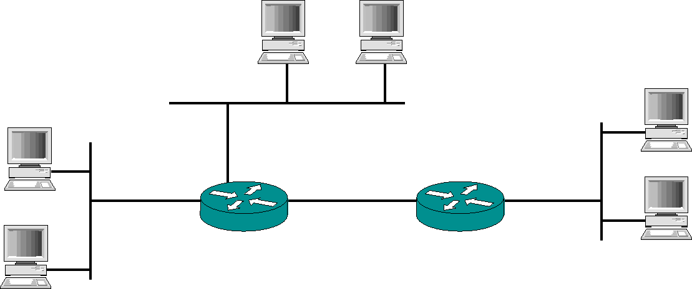
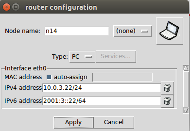
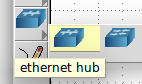
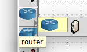

Il y a trois réseaux locaux sur ce schéma constitués chacun de deux machines. Deux routeurs interconnectent l'ensemble. Ainsi nous obtenons un total de quatre sous-réseaux : les trois LAN + le réseau entre les routeurs
Avant toute chose, sur une feuille de papier proposez un adressage IP pour cette topologie en utilisant la classe C suivante 192.168.x.y/24
Combien vous faudra-t-il de sous réseaux, représentés par la valeur x, pour réaliser l'adressage de votre topologie ? Par défaut, bien que le zéro soit autorisé, utilisez une valeur de x > 1. Certains routeurs (et c'est le cas de CORE) refusent de router des adresses contenant des zéros.
Faites confirmer votre adressage par votre tuteur ou vérifiez avec votre voisin de sa cohérence.
Maintenant reproduisez ce réseau avec CORE. Vous pouvez soit changer l'adressage automatique de CORE via la boite de configuration réseau que vous obtiendrez en cliquant avec le bouton droit de la souris, au dessus d'une machine sur "Configure" comme illustré ci-dessous :

Ou alors vous pouvez utiliser la ligne de commande et l'outil ifconfig afin de mettre en place votre plan d'adressage. Consultez tout d'abord la page de manuel de ifconfig. Par exemple pour une interface identifiée par eth0, la syntaxe est : ifconfig eth0 mon_adresse_IP netmask mon_netmask
Pour créer un LAN de machines, il vous faudra utiliser un élément réseau qui réalise une connexion au niveau physique. C'est élément est l'équivalent d'une simple prise multiple permettant de connecter plusieurs machines sur un même LAN. C'est élément est soit un hub, soit un switch et à pour symbole sous CORE l'icone suivant :

En revanche, l'élément qui permet d'interconnecter des sous-réseaux entre-eux porte le nom de routeur et sont symbolisés ainsi :

Une fois l'adressage réalisé pour l'ensemble du réseau, lancez un ping entre deux machines de LAN différents afin de vérifier que tout est correct. Attention ! Il vous faudra attendre environ 40 secondes avant que les routeurs annoncent leurs routes et que vous puissiez pinguer si vous avez oublié d'activer RIP. Soyez patient si votre premier ping ne fonctionne pas.
Laissez tourner le ping et lancez une capture de trafic avec tcpdump ou wireshark sur un des routeurs. Observez les adresses IP source et destination des paquets ping que vous capturez et notamment des requêtes et des réponses.
Faite une sauvegarde de votre topologie si vous voulez la réutiliser par la suite.